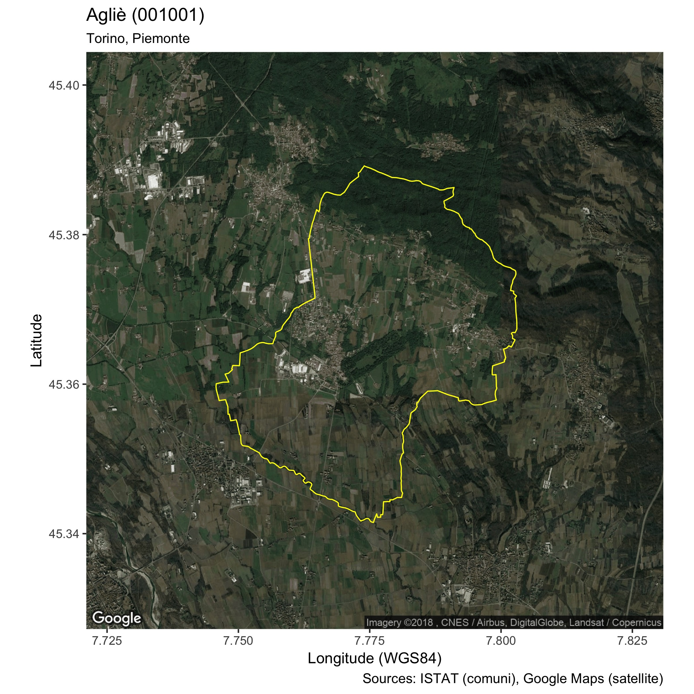
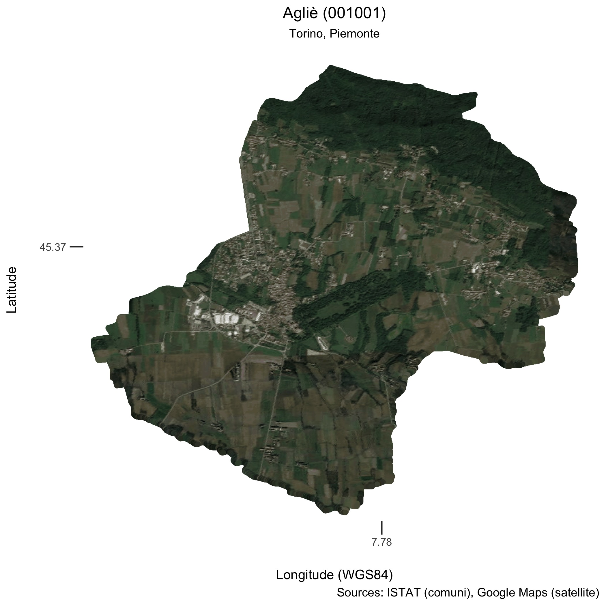

> coms %>% as_tibble()
# A tibble: 7,998 x 6
PRO_COM COMUNE bb REGIONE DEN_CMPRO geometry
<dbl> <fct> <list> <fct> <fct> <S3: sfc_MULTIPOLYGON>
1 1001 Agliè <S3: bbox> Piemonte Torino "list(list(c(7.7826615064871, 7.783045…
2 1002 Airasca <S3: bbox> Piemonte Torino "list(list(c(7.48794557658868, 7.48797…
3 1003 Ala di Stura <S3: bbox> Piemonte Torino "list(list(c(7.27324227448866, 7.27359…
4 1004 Albiano d'Ivrea <S3: bbox> Piemonte Torino "list(list(c(7.92507300912979, 7.92533…
5 1005 Alice Superiore <S3: bbox> Piemonte Torino "list(list(c(7.79782897832822, 7.79843…
6 1006 Almese <S3: bbox> Piemonte Torino "list(list(c(7.4348997124695, 7.435239…Writing a Twitter Bot in R
R
Maps
Since a while I am contemplating the possibility of automatically publishing on social media some stats and data visualisations from work.
When I discovered the nice bot @everytract by @fitnr (and a little later the @GVAcartografic’s #Secciócensal tweets) I decided to try and do a Twitter bot myself in order to see what is possible and how difficult it is.
I thought that combining maps and some Italian data would be a good recipe for having fun and so I did set out to use some GIS data from the Italian National Institute of Statistics (ISTAT)(@istat_en) in order to publish a map for every Italian comune (the basic administrative division in Italy).
The Data
The relevant GIS data in the form of Shapefiles can be found on ISTAT’s web site, https://www.istat.it/it/archivio/124086. I took the most detailed polygons as for 2016 with WSG84 datum.
I combined the info from ISTAT in an sf dataframe which looks like the following:
PRO_COM is the unique numerical code identifying each Italian comune, COMUNE is the name of the comune, DEN_CMPRO is the name of the relevant super-entity the comune belongs to (either Metropolitan City or a Province), REGIONE is the name of the region and geometry is the simple feature describing the boundary of the comune. bb is the axis aligned bounding box of the comune’s polygon and is used to to extract the right portion (at the right zoom) of the satellite map.
All data preparation is documented in prepare-data.R file in the Italian Comuni Twitter bot repository.
R packages to the Rescue
I found a lot of examples for developing Twitter bots in Python but I wanted to write it in R which we are starting to use more and more at work.
Of course we all stand on the shoulder of Giants, and there is always somebody who has already done bits and pieces of what you need: rtweet does all you need as a client for accessing Twitter API, while the usual suspects ggplot2, sf and ggmap cover the maps aspects.
The setup for Twitter was smooth and I only executed the steps as described in rtweet package, so no need to repeat them here.
Maps
First attempt
The first map I produced was a simple ggmap/ggplot map:

This is produced by code similar to this:
library(tidyverse)
library(sf)
library(ggmap)
library(rgdal)
# get the data as per Italian Comuni Twitter Bot repo
# https://github.com/espinielli/italian-comuni-bot/
coms <- readRDS("data/coms.rds")
# just get the first one
com <- coms %>%
dplyr::filter(row_number() == 1) %>%
dplyr::slice(1)
com.sp <- as(com, "Spatial")
# extract its bounding box
bb <- com$bb[[1]]
# centroid
centroid <- com %>%
st_transform(23032) %>%
st_centroid() %>%
st_transform(4326) %>%
st_coordinates() %>%
as_data_frame() %>%
`names<-`(c("lon", "lat"))
# get Google Map (note: hardcoded zoom level)
m <- get_map(location = centroid, zoom = 12, maptype = "satellite")
terrain <- ggmap(m)
com.sp.df <- com.sp %>% fortify
#----------------------------------------------------------------
# inspired by
# https://ryanpeek.github.io/2017-11-21-mapping-with-sf-part-3/
#----------------------------------------------------------------
pg <- terrain +
geom_polygon(
data = com.sp.df,
aes(x = long, y = lat),
fill=NA,
color="yellow",
lwd = 0.4, alpha=0.5) +
labs(x = "Longitude (WGS84)",
y = "Latitude",
caption = "Sources: ISTAT (comuni), Google Maps (satellite)") +
ggtitle(
label = str_glue("{comune} ({id})",
comune = com$COMUNE,
id = str_pad(com$PRO_COM, 6, pad = "0")),
subtitle = str_c(com$DEN_CMPRO, com$REGIONE, sep = ", "))There are few “smelly” things in the code above:
- the zoom level is hardcoded to 12
- the map is not cropped to the boundary
The solution above is wrapped (with fix to first bullet, see below) in the function generate_google_map in the tweet-comune.R file in the Italian Comuni Twitter bot repository.
Automatic Zoom Calculation
I was surprised to always see examples with hardcoded zoom levels, but in fact the ggmap package has a helper function calc_zoom just for that. The only problem is that it is buggy, but pull request #141 has a proposed fix which I just saved in a local calc_zoom in the repo.
It is about taking the minimum instead of the maximun of the zoom levels in the longitude and latitude direction.
Crop Map to Polygon
I had no idea how to crop the Google Map to the comune’s boundary, but Giants exist and I have found a nice solution (by Robin Lovelace) posted on GIS SO.
It boils down to transforming the Google Map to raster and masking it with the comune’s boundary:
m.rast <- ggmap_rast(map = m)
com.only <- mask(m.rast, com.sp)
This (and bells and whistles) is now wrapped in a function generate_cropped_map in the tweet-comune.R file in the Italian Comuni Twitter bot repository.
Tweet It!
The logic to tweet the comunes’ maps one by one is as follows:
- find out what was sent last
- get the new comune
- decide whether to embelish the tweet with refs & Co.
- tweet and save some sort of proof of which comune has been dealt with
# set things up for Twitter
tweet_authorize()
# this is the core of the process:
# 1. find out what was sent last
# 2. get the new comune
# 3. decide whether to embelish the tweet with refs & Co.
# 4. tweet and save some sort of proof of which comune has been dealt with
# 1. find out what was sent last
l <- read_file("last-tweeted.txt") %>% as.integer()
n <- (l + 1) %% lc
# 2. get the new comune
com <- coms %>%
dplyr::filter(row_number() == n) %>%
dplyr::slice(1)
# 3. decide whether to embelish the tweet with refs & Co.
msg <- ifelse((n %% 19) == 0,
"Done in #rstats using #ggplot2, #rspatial, #ggmap and #rtweet.",
"")
credits <- ifelse((n %% 67) == 0,
"Sources @istat_it, @istat_en, @googlemaps.",
"")
# 3. decide whether to embelish the tweet with refs & Co.
tweet_comune(com, n, msg = msg, credits = credits)
# 4. tweet and save some sort of proof of which comune has been dealt with
writeLines(text = as.character(n) , "last-tweeted.txt")For step 1. I decided to store the index of the last tweeted comune in a file named last-tweeted.txt. So this is the file read at the beginning in order to know where to continue from, step 2., or eventually start over again.
Step 3. is about setting some message and credits, but sparingly so as not to annoy (i.e. spam) too much the relevant communities.
Finally step 4 is about posting the tweet, followed by writing out the index of the comune.
ToDo’s
I am now at the stage where I can execute the 4 steps above and tweet a new map. I can execute all the steps on the command line by issuing
$ Rscript tweet-bot.RThis can easily put into a cron job and, for example, tweet a map every hour (so completing the job in 333 days and 6 hours). But to be frank the code is not robust enough to run without supervision.
What I would really like would be to
- use some serverless service like AWS Lambda to trigger the tweeting every hour
- a robust way to keep state (i.e. what can I use to know what was last tweeted comune’s index?)
- a robust way to cope with failures to post the tweet (i.e. what to do in case of no WIFI/Internet connection)
If you have any suggestions or comments on the above, feel free to get in touch with me!